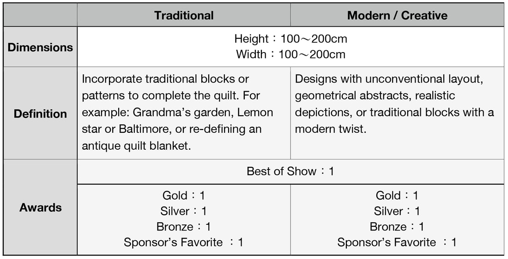
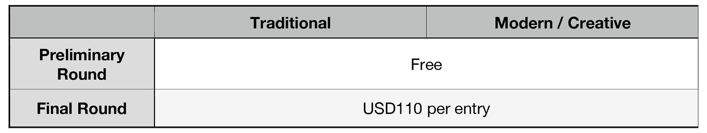
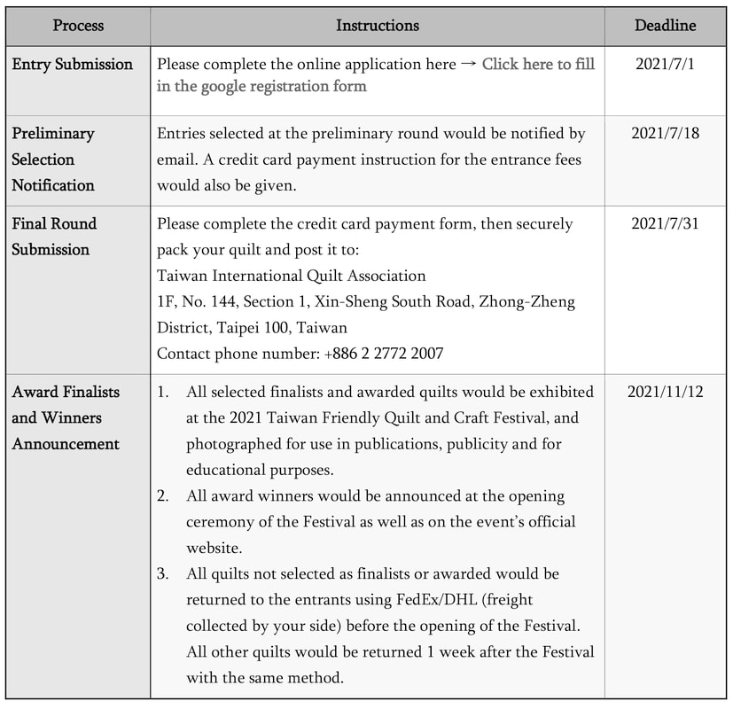

Taiwan Friendly Quilt & Craft Festival 2021
Taiwan Quilt Contest 2021
Quilt Contest
In 2019, the Taiwan International Quilt Association (TIQA) has successfully held the first juried quilt contest in Taiwan and received many astonishing works from local artists. In 2021, we want to continue this wonderful event where artists can share their passion, creativity and skills in quilting, so we hereby invite you to submit your masterpiece, and be part of the quilt contest!
Rules and Guidelines
Rules and Guidelines
All entries must be the quilter’s original or an inspired design. (if your work was inspired by a painting, photo and another quilt, please provide details of your source and/or any authorization documents with your submission)
- All quilts entered must be completed after January 1st of 2019. Any quilt awarded at the 2019 Taiwan Friendly Quilt & Craft Festival would not be accepted.
- You may submit multiple entries to different categories, but submissions are limited to 3 quilts.
- All quilts must be completed by the entrant independently.
- All quilts must be quilted by hand, machine or both, and must consist of 3 layers (quilted top, batting, and backing).
- Any added decoration must be properly secured. All dangerous decorations are prohibited.
- A 10cm rod sleeve must be firmly attached along the upper edge of the back; and an identification label should be sewn at the lower right corner of the back. (Including your name, quilt title, phone number and completion date.)
Categories
Contest Categories

Entrance Fees
Entrance Fees
All fees include insurance and one complimentary entry to the Taiwan Friendly Quilt & Craft Festival.

Jurying Process
Jurying Process

Entry Online
Entry Online
The original event page provided an online Google registration form for contest entry.
The registration period has ended. This page is retained as an archive of the 2021 event.
Event Information
Taiwan Friendly Quilt & Craft Festival 2021
- Organizer
- Taiwan International Quilt Association
- Venue
- Warehouse No.1, Songshan Cultural and Creative Park, Taipei, Taiwan
- Dates
- 2021/11/12~14

Back to Taiwan Friendly Quilt & Craft Festival 2021